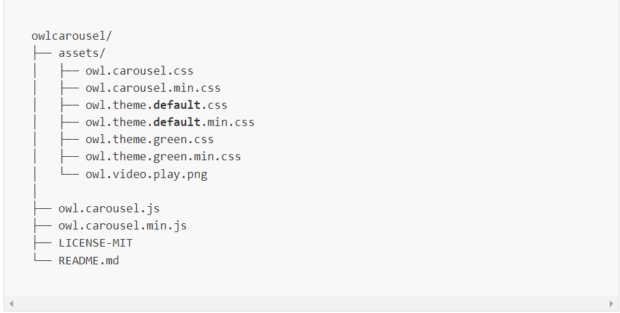

- Welcome
- Installation
- FAQ
- Options
- Classes
- Events
- Built-in Plugins
- Plugin API
- Sass Styles
- External Libs
- Contributing
- Changelog
- Contact
Getting Started
No matter if you are a beginner or an advanced user, starting with Owl is easy.
New Features
• Infinity Loop
• Center item
• Smart Speed
• Stage Padding
• Item Margin
• Ability to make almost all options responsive
• Various Widths
• Callback Events
• RTL
• YouTube/Vimeo/vzaar support (fetching thumbnails as well)
• Anchors navigation
• Merged Items
• and more...
Compatibility
Owl Carousel 2.x.x is not compatibile with previous version 1.x.x. The idea stays the same and it has a lot
in common with Owl1 but the core code was re-written from scratch and I’m very proud with all the new
features.
Owl Carousel has been tested in following browsers/devices:
• Chrome
• Firefox
• Opera
• IE7/8/10/11
• iPad Safari
• iPod4 Safari
• Nexus 7 Chrome
• Galaxy S4
• Nokia 8s Windows8
Library
Download a version that suits your needs:
• Owl Carousel - 2.3.4 - Distributed version - compiled and minified. Javascript, images and CSS
included.
• Owl Carousel - 2.3.4 - 2.3.4 - Source files including this documentation. All wrapped in Grunt project.
Files included
Distributed version structure:
Dependecies
Get the latest jQuery or Zepto library. Minimum compatible jQuery version is 1.8.3 version.
Next Step